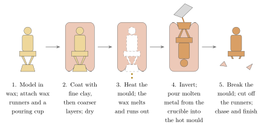
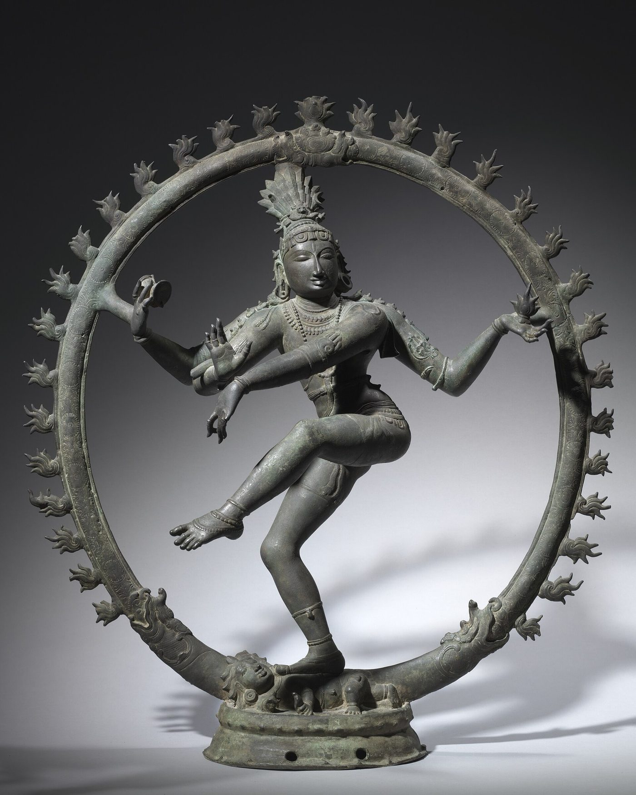
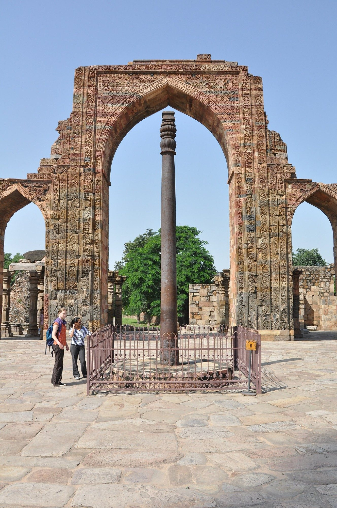
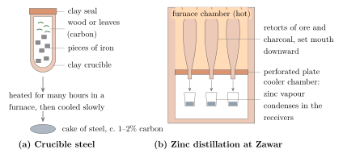
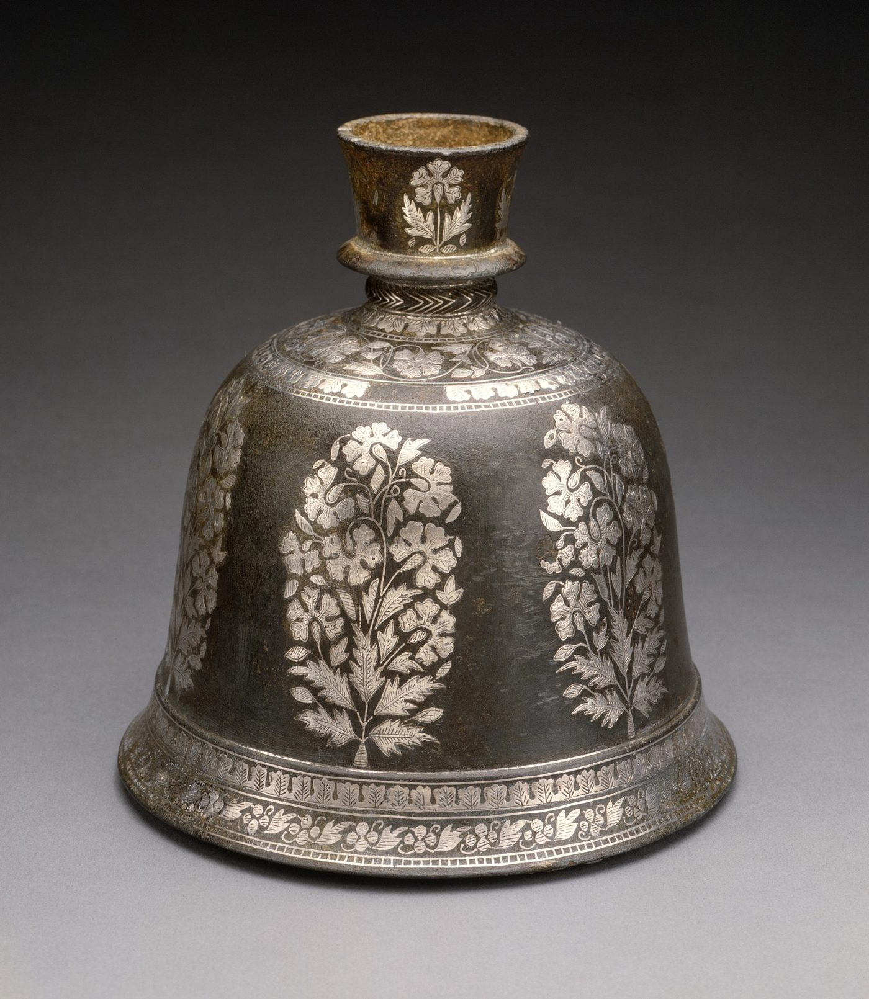

Chapter 3: Loha: Metals and Metalworkers¶
Metalworking is one of the oldest specialised crafts of the subcontinent and one of the best studied by archaeologists and metallurgists. Indian smiths forged massive objects of wrought iron, made high-carbon crucible steel that was exported across western Asia, distilled zinc on an industrial scale, and cast bronze images of great refinement. This chapter surveys these achievements from the point of view of the craftsman and his products. The history of metallurgy and of the chemical tradition of rasaśāstra is treated more fully in Volume 14 of this series (Rasāyana: Chemistry and Metallurgy), to which the reader is referred for technical detail.
3.1 Copper and Bronze¶
3.1.1 Early Copper¶
A copper bead from an early burial at Mehrgarh in Baluchistan, perhaps of the sixth millennium BCE, is among the earliest metal objects in South Asia; the mineralised cotton fibres preserved inside it are discussed in Chapter 4 (Jarrige et al. 1995). Copper working became common in the fourth millennium, and the cities of the mature Harappan period (c. 2600–1900 BCE) used copper and bronze for tools, weapons, vessels and ornaments. Indus smiths used both arsenical copper and tin bronze, cast metal in open and closed moulds, and made small figures by the lost-wax process, of which the bronze “dancing girl” of Mohenjo-daro is the best known (Kenoyer 1998). The sources of Indus tin are uncertain; Afghanistan and Central Asia are possible sources, since the subcontinent itself has little tin.
In the Ganga–Yamuna Doab and further east, the so-called Copper Hoards of the early second millennium BCE include flat axes, harpoons, “antennae-hilted” swords and enigmatic anthropomorphic figures of thick copper sheet. Their makers are still debated; the copper may have come from the Khetri belt of Rajasthan or from the ores of Jharkhand and Odisha.
3.1.2 Bronze Casting by the Lost-Wax Process¶
Lost-wax casting (Sanskrit madhūcchiṣṭa-vidhāna, “the method of beeswax”) produces a unique metal copy of a wax model (Figure 3.1). The model is coated in fine clay, the clay is dried and heated so that the wax melts out, and molten metal is poured into the cavity; the mould is then broken to release the casting. For hollow castings the wax is modelled over a clay core. The Mānasāra includes a chapter on casting images in wax, and the method is described in a number of later texts (Acharya 1934).

The most celebrated Indian bronzes are those of the Cola period in Tamil Nadu (10th–13th centuries CE), made for processions in temples: images of Śiva as Naṭarāja, of Pārvatī, of the saints and of Viṣṇu and his consorts. They are cast solid, and their metal is usually a leaded copper or bronze; the “five-metal” alloy (pañcaloha) of gold, silver, copper and other metals spoken of in ritual texts is more an ideal than a description of the actual composition of most images. The hereditary sthapatis of Swamimalai in the Kaveri delta still make images by the same method (below).
The Cola bronze of Śiva as Naṭarāja, the lord of dance, shows what the method could achieve (Figure 3.2). The god dances within a ring of flames, one leg raised across his body, the other trampling a dwarf who personifies ignorance; one hand holds the drum whose sound accompanies creation, another the fire of destruction; one hand is raised in the gesture of protection, and another points to the raised foot, the refuge of the devotee; his locks fly out to either side with the river Gaṅgā caught in them. The image was usually cast in one piece, balanced on a single foot, with the flying hair and the ring of fire joined to the body at only a few points, and then carried in procession. Coomaraswamy’s essay “The Dance of Śiva” (1918) made this image famous in the West as a symbol of the rhythm of the universe (Coomaraswamy 1918); its interpretation draws on the Tamil devotional literature of Chidambaram as well as on Sanskrit texts.


Other regions had their own metal-image traditions. The Buddhist monasteries of Bihar and Bengal under the Pālas (8th–12th centuries) produced bronze images of the Buddha, bodhisattvas and Tantric deities, many found in hoards such as that of Kurkihar, which influenced the art of Nepal, Tibet and Southeast Asia. An earlier copper image of the standing Buddha, more than two metres high, found at Sultanganj in Bihar and now in the Birmingham Museum and Art Gallery, shows that very large castings were made in the Gupta or post-Gupta period. Kashmir, the western Himalaya and Nepal developed brass and copper image traditions of their own; the Newar metalworkers of the Kathmandu valley became the leading image-makers of the Himalayan Buddhist world. In western India, Jain temples commissioned large numbers of metal images of the Tīrthaṅkaras, many inscribed with the date and the name of the donor.
Lost-wax casting is also practised by the Dhokra or Dokra metalworkers of West Bengal, Odisha, Jharkhand, Chhattisgarh and Madhya Pradesh. They build the wax model from threads of wax wound over a clay core, which gives their figures of animals, deities and people their characteristic ribbed surfaces (Chapter 12). Their metal is usually scrap brass, melted in a crucible sealed into the clay mould itself, so that when the mould is heated and inverted the molten metal flows directly into the cavity left by the wax. The Dhokra smiths were traditionally itinerant, making measuring bowls, lamps, bells, ornaments and images of local deities for village customers; since the mid-twentieth century, encouraged by craft boards and designers, they have made figures for urban and foreign buyers. Many Dhokra families are poor and landless, and the rising cost of brass and wax has made their craft precarious.
3.1.3 The Image-Maker’s Workshop Today¶
The canonical proportions and iconography of images are treated in Volume 16. Here we look at how a modern bronze workshop is organised and what it sells. At Swamimalai, near Kumbakonam, the bronze workshops are family enterprises of the Viśvakarma sthapatis (Chapter 2), ranging from a master working with his sons to larger studios employing dozens of hired workers. The work is divided by skill. The master sets out the proportions of a new image with a measuring strip graduated in the units of the texts, follows the dhyāna verse of the deity for its iconography, and usually models or at least finishes the face, the part on which the reputation of a workshop depends. Assistants prepare the wax, a mixture of beeswax, a resin and a little oil, which is softened by warming and rolled into sheets and rods. They model ornaments and attributes separately and fix them to the figure, and they attach the wax runners and vents. Other workers coat the model with several layers of fine alluvial clay from the river, the first very fine to take the detail and the later ones coarser and reinforced; they then heat the mould, drain the wax, and pour the metal melted in a crucible into the hot mould. Large images are cast in parts and joined. The longest stage is often the last. Chasing, engraving and filing the rough casting, sharpening the details of face, hands and ornaments, can take longer than modelling and casting together, and it is done by specialists with sets of fine chisels and files. The canon fixes the proportions, but the movement and modelling that distinguish a good image come from the skill of the craftsman and the conventions of his workshop.
The metal is usually copper with tin and lead. Customers who ask for pañcaloha often have token amounts of gold and silver added at the casting. The workshops produce for several markets at once: temples in Tamil Nadu and elsewhere in India, which have new images consecrated before worship; Hindu temples abroad; households, which buy small images for domestic shrines; and collectors and decorators in India and abroad. The name “Swamimalai bronze icons” has been registered as a Geographical Indication (Chapter 15). Because Cola and later bronzes have been stolen from temples and sold abroad, new images are subject to legal checks. Under the Antiquities and Art Treasures Act of 1972, objects more than a hundred years old may not be exported except by the government or its authorised agencies, so a newly made image needs a certificate that it is not an antiquity before it leaves the country. The return to India in 2014 of a Cola Naṭarāja stolen from a temple at Sripuranthan and bought by the National Gallery of Australia showed how close the line can be between the market for new work in the old style and the trade in stolen originals.
Stone image-making shows the same pattern of continuity and change. At Mamallapuram, workshops line the streets near the Pallava monuments. Some are run by hereditary sculptors and others by graduates of the Government College of Architecture and Sculpture (Volume 16). They carve granite images and architectural elements for temples in India and overseas, using pneumatic hammers and diamond-disc cutters to rough out the block and hand chisels for the finish. The use of power tools has greatly increased output, and it has also increased the danger from silica dust (Section 7.10).
3.1.4 Bell Metal and Brass¶
Bell metal (kāṃsya, Hindi kāṃsā) is a high-tin bronze, typically with roughly one part of tin to three or four of copper, used for gongs, cymbals, bells and dishes. In Kerala, high-tin bronze is also used for the famous metal mirrors of Āṟanmuḷa, which are cast and then polished to a reflective surface (Chapter 10). Brass (pittala, rīti), an alloy of copper and zinc, was made in the subcontinent from the late centuries BCE, at first probably by heating copper with zinc ore, and later by alloying copper with metallic zinc (Craddock 2017).
Hammered brass and copper utensils are made by raising a disc of sheet metal over an anvil, with repeated cycles of hammering and annealing. The craft of the Ṭhaṭherās of Jandiala Guru in Punjab, who make vessels entirely by hand-hammering, was inscribed on UNESCO’s Representative List of the Intangible Cultural Heritage of Humanity in 2014. Moradabad in Uttar Pradesh is the largest centre of the brassware industry today, producing mainly for export.
3.2 Iron¶
3.2.1 The Beginnings of Iron¶
The date at which iron came into use in India is debated. Iron objects are common at sites of the Painted Grey Ware and related cultures of the early first millennium BCE, and Dilip Chakrabarti argued that iron technology developed independently in several regions of India (Chakrabarti 1992). Excavations at Malhar, Raja Nala-ka-Tila and other sites in Uttar Pradesh have produced iron objects and slag with radiocarbon dates in the first half of the second millennium BCE, which, if confirmed, would make Indian iron-working broadly contemporary with the earliest iron-working elsewhere (Tewari 2003).
In the Ṛgveda the word ayas means metal, probably copper or bronze. Later Vedic texts distinguish “dark metal” (śyāma ayas, kṛṣṇāyasa), that is iron, from “red metal” (lohita ayas), copper; the Chāndogya Upaniṣad uses “everything made of iron” (kārṣṇāyasa) as one of its examples of a single substance known through its products (6.1.6). The Arthaśāstra places mines and metal workshops under a superintendent of mines and a superintendent of metals, who is to run workshops for copper, lead, tin, brass, bronze and other metals (Kangle 1960–1965; Olivelle 2013).
3.2.2 Smelting¶
Before modern blast furnaces, iron was smelted in small clay furnaces fed with ore and charcoal and blown with bellows. The product was a spongy bloom of iron and slag, which was hammered repeatedly to expel the slag and consolidate the metal. Such furnaces were operated in the nineteenth century across central and eastern India by specialist communities such as the Agaria of the Maikal hills, whose techniques, myths and worship of Lohāsur, the iron demon who dwells in the furnace, were described by Verrier Elwin (Elwin 1942). Most of these furnaces closed in the late nineteenth and early twentieth centuries, when cheap imported and factory iron undercut them.
3.2.3 Forging Large Iron: The Delhi Pillar¶
The most famous product of Indian blacksmiths is the iron pillar in the Qutb complex at Mehrauli, Delhi (Figure 3.3): about 7.2 m long and more than six tonnes in weight, set up as a standard (dhvaja) of Viṣṇu by a king Candra who is generally identified with Candragupta II (c. 375–415 CE), and probably brought to Delhi from elsewhere centuries later. From the craftsman’s point of view its interest lies in how it was made. It was built up by forge-welding: lumps of bloomery iron, each the product of a small furnace, were heated and hammered on to the growing mass, a task that demanded many furnaces, a large team and great control of heat (Balasubramaniam 2002). A still larger forge-welded pillar, now broken, lies at Dhar in Madhya Pradesh, and forge-welded iron beams support stone members in the temples of Puri and Konarak. The pillar’s slow corrosion, explained by R. Balasubramaniam through its high phosphorus content and the protective film that forms in Delhi’s climate, was not designed by its makers; the inscription, the metallurgy and the other large iron objects are discussed in Volume 14, Chapter 4 (Balasubramaniam 2000).


3.3 Crucible Steel¶
South India and Sri Lanka were the home of a high-carbon steel made in sealed crucibles, known in English as “wootz”, a corruption of the Kannada and Telugu word ukku, steel. Pieces of iron, with wood, leaves or other carbon-rich material, were sealed in small clay crucibles and heated in a furnace for many hours (Figure 3.4a); the iron absorbed carbon and melted, and on slow cooling formed a small cake of steel with about 1–2% carbon. Ingots of this steel were traded to Persia and Syria, where smiths forged them at low temperatures into blades with the swirling “watered” pattern later admired in Europe as “Damascus steel” (Bronson 1986; Srinivasan and Ranganathan 2004).
Archaeological evidence for crucible steel production in South India goes back to the late centuries BCE at sites such as Kodumanal and Mel-siruvalur in Tamil Nadu, and to the first millennium CE in Sri Lanka, where Gillian Juleff also discovered wind-powered iron-smelting furnaces on hill slopes (Srinivasan 1994; Juleff 1996). The Periplus (mid-first century CE) lists “Indian iron and steel” among the goods shipped from western India to the Red Sea (Casson 1989). Indian steel and Indian swords were well known in the Islamic world: Arabic and Persian writers on swords and minerals, from al-Kindī in the ninth century to al-Bīrūnī in the eleventh, distinguished Indian blades and Indian steel among the varieties they described. European travellers and officials of the eighteenth and nineteenth centuries described crucible steel production at several places in Mysore, Salem and Hyderabad, and their reports stimulated scientific interest in Britain.
The watered pattern of Damascus blades comes from bands of iron carbide in a softer steel matrix. Its dependence on trace impurities in the Indian ingots and on forging at moderate temperatures was shown by J. D. Verhoeven and the bladesmith A. H. Pendray, who reproduced genuine watered blades (Verhoeven et al. 1998); reports of carbon nanotubes in a seventeenth-century sabre (Reibold et al. 2006) describe its microstructure and do not mean that the smiths were consciously making “nanomaterials”. The science of wootz is treated in Volume 14, Chapter 5. For the craft historian the decline matters most: crucible steel making died out in the nineteenth century not because a “secret” was lost but because its markets and fuel supplies disappeared.
3.4 Zinc¶
Zinc boils at about 907°C, below the temperature needed to reduce its ore, so in an ordinary furnace it escapes as vapour. At Zawar near Udaipur in Rajasthan, smelters solved the problem by downward distillation in clay retorts set upside down in a furnace above condensing vessels (Figure 3.4b); the huge heaps of discarded retorts were excavated by P. T. Craddock, L. K. Gurjar and K. T. M. Hegde (Craddock et al. 1983). Zinc was distilled there from about the ninth or tenth century CE, and on a very large scale from about the fourteenth (Craddock 2017); in Europe industrial production began only after William Champion’s patent of 1738. For the craftsman, metallic zinc mattered because it made possible high-zinc brass and the zinc alloy of Bidrī ware (below). The process and the rasaśāstra descriptions of it are treated in Volume 14, Chapter 6.

3.5 Gold and Silver¶
Gold ornaments are known from the Indus cities, and gold has been worked continuously in the subcontinent ever since. The Arthaśāstra distinguishes several kinds of gold by origin, among them river gold, mine gold and gold obtained by “chemical” means, and describes the testing of gold on a touchstone and the duties of the state goldsmith, who was to work in a guarded workshop and was liable to heavy penalties for adulteration (2.13–14) (Kangle 1960–1965). Ancient workings at Kolar and Hutti in Karnataka show that gold was mined from hard rock in the first millennium CE; when British companies began mining at Kolar in the 1870s and 1880s they followed the old workings. Goldsmithing techniques, including filigree, granulation, kundan setting and enamelling, are discussed in Chapter 10.
3.6 Bidrī Ware¶
Bidrī ware, named after the city of Bidar in Karnataka, the capital of the Bahmanī sultans from 1429, is made of a cast alloy of zinc with a small amount of copper. The surface is engraved and inlaid with silver (sometimes gold or brass) wire or sheet, and the object is then coated with a paste of soil (traditionally taken from the old fort walls of Bidar) mixed with sal ammoniac. The paste turns the zinc alloy a deep, permanent matt black while leaving the silver bright. Bidrī ware flourished in the Deccan sultanates and under the Nizams of Hyderabad, and is still made in Bidar and Hyderabad; huqqa bases, boxes and trays are the classic forms (Figure 3.5). It is registered as a Geographical Indication.

_LACMA_M.89.131.4.jpg){kind=link}
Related inlay techniques include koftgarī, in which gold or silver wire is hammered into a cross-hatched iron or steel surface (Rajasthan, and formerly Sialkot and Gujarat), and tārkashī, the inlay of brass wire in wood (Mainpuri, Uttar Pradesh).
3.7 Coins, Copper Plates and Inscribed Metal¶
Some of the most abundant products of Indian metalworkers are coins. The earliest Indian coins, the silver “punch-marked” coins of the Ganga valley and the north-west (from about the fifth or fourth century BCE), were made by cutting pieces of silver of a standard weight and stamping them with a series of small symbols. Later dynasties issued cast copper coins, coins struck between engraved dies on the Greek model, and, under the Kuṣāṇas and Guptas, fine gold coins whose designs are among the masterpieces of Indian miniature sculpture. Making coins required the refining and assaying of metals, the engraving of dies and strict control of weight and fineness; mint-masters were important officials. In the early fourteenth century Ṭhakkura Pherū, a Jain official at the Delhi mint, wrote a treatise on coins (Dravyaparīkṣā) recording the weight and metal content of the coins that passed through his hands, together with his treatise on gems (Chapter 10).
Land grants and other important documents were engraved on copper plates (tāmraśāsana), strung together on a ring and sealed with the royal seal. Many thousands survive, most of them from the fourth and fifth centuries CE onwards, and they are a major source for Indian history. Their texts were composed by court poets and scribes, and the plates were often engraved by goldsmiths or other craftsmen, whose names are sometimes recorded at the end of the inscription.
3.8 Bells, Lamps and Ritual Metalwork¶
Temples and households needed lamps, bells, vessels for offerings, incense-burners and processional objects. Bell metal and brass were the usual materials, and many regions have their own forms: the tall standing lamps of Kerala and Tamil Nadu, the hanging chain lamps of the Deccan, the figure-lamps held by female figures (dīpalakṣmī), and the bells hung in temples. Kerala smiths also made vessels of high-tin bronze, which is brittle when cast but becomes tough and workable when quenched from a high temperature; Sharada Srinivasan and Ian Glover showed that this specialised technique, also known from early Southeast Asia, survives among Kerala metalworkers (Srinivasan and Glover 1995). In Bastar and neighbouring areas, Ādivāsī smiths forge wrought-iron figures of animals, riders and deities and tall lamps of twisted iron, now also made for urban buyers.
3.9 Smiths in Society¶
Metalworkers occupied very different social positions. The village blacksmith (Lohār, Kollaṉ, Kammāra) made and repaired ploughshares, sickles, axes and the iron parts of carts, usually in return for grain from the households he served (Chapter 13). Goldsmiths, braziers and bronze-casters served temples, courts and urban customers. In south India all of these belonged to the Viśvakarma communities (Chapter 2); in the north they formed separate castes. Some metalworkers were itinerant: the Gāḍiyā Lohārs of Rajasthan, Gujarat and Madhya Pradesh travel with their families in ornamented bullock-carts, setting up their forges wherever there is work; their own tradition links their wandering to a vow of loyalty to Mahārāṇā Pratāp of Mewar, taken after the Mughal capture of Chittor in the sixteenth century. Iron smelting was the work of specialist groups, often Ādivāsī, such as the Agaria, Asur and Lohar of central and eastern India. Metal-casting communities of eastern India, such as the bell-metal workers (Kāṃsārī) of Bengal, Odisha and Assam, form distinct communities with their own centres, such as Sarthebari in Assam and Kantilo in Odisha.
3.10 Arms and Armour¶
Indian smiths and founders made swords, daggers, armour and, from the fifteenth century, guns. Indian swords took many forms: the straight, broad khaṇḍā of the Rajputs and Marathas, the curved talwār influenced by Persian and Turkish blades, the push-dagger (kaṭār) with its H-shaped grip, peculiar to India, and the gauntlet-sword (paṭā) used by Maratha cavalry. Armourers made mail shirts, helmets and shields of steel or of hide, and decorated weapons with koftgarī, enamel and jewels. The armouries of Indian courts, such as those preserved in the museums of Jaipur, Jodhpur and Hyderabad, show the skill of these craftsmen. The great bronze cannon called Malik-i Maidān, cast at Ahmadnagar in 1549 and now at Bijapur, is one of the largest cannon of its period. The Mysore armies of Haidar Ali and Tipu Sultan used rockets with iron casings against the East India Company in the wars of the 1780s and 1790s; after the fall of Seringapatam some were taken to Britain, where William Congreve developed the British military rocket in the early 1800s. Military technology is treated in Volume 20 of this series.
Health and Safety Note
Many historical metal preparations are dangerous. The rasaśāstra tradition prepared calcined metals and mercury compounds (bhasmas) as medicines; modern analyses of Ayurvedic products have repeatedly found lead, mercury and arsenic at levels that can cause poisoning (Saper et al. 2004, 2008). Smelting, casting and the use of lead, mercury or arsenic compounds in craft work also expose workers to toxic fumes and dust. Nothing in this chapter should be taken as a recipe or as a recommendation of any metal preparation for health.
Further Reading¶
For a general history of metallurgy, Tylecote (1992); for early iron, Chakrabarti (1992); for the Delhi pillar, Balasubramaniam (2002); for crucible steel, Srinivasan and Ranganathan (2004) and Bronson (1986); for zinc, lead and silver, Craddock (2017); for iron smelting as a living craft in the 1930s, Elwin (1942).